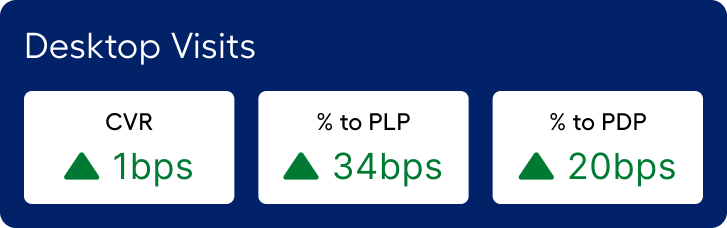
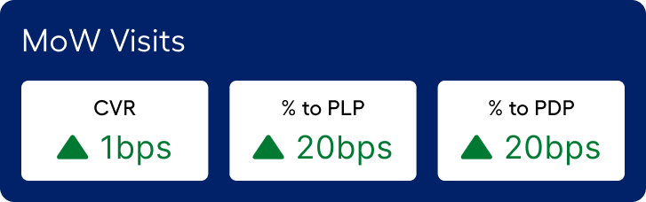
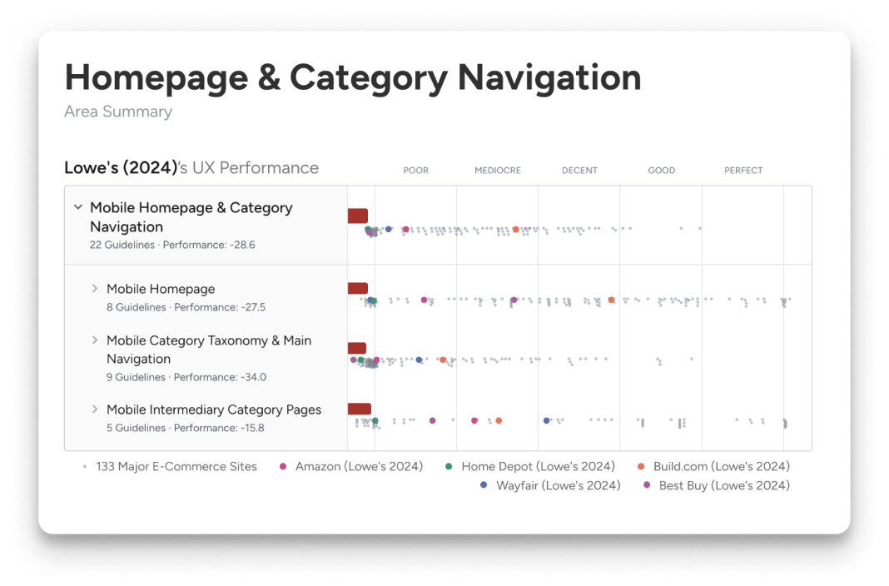
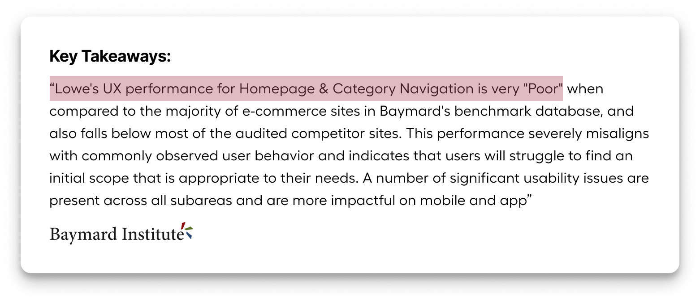
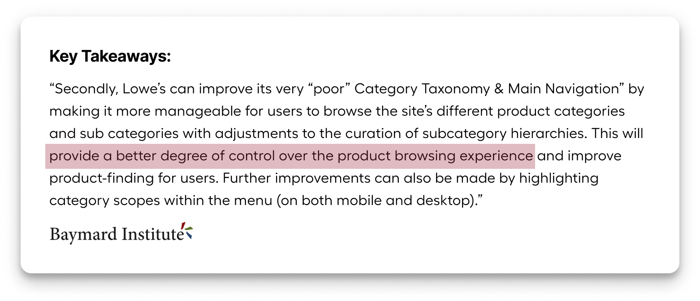
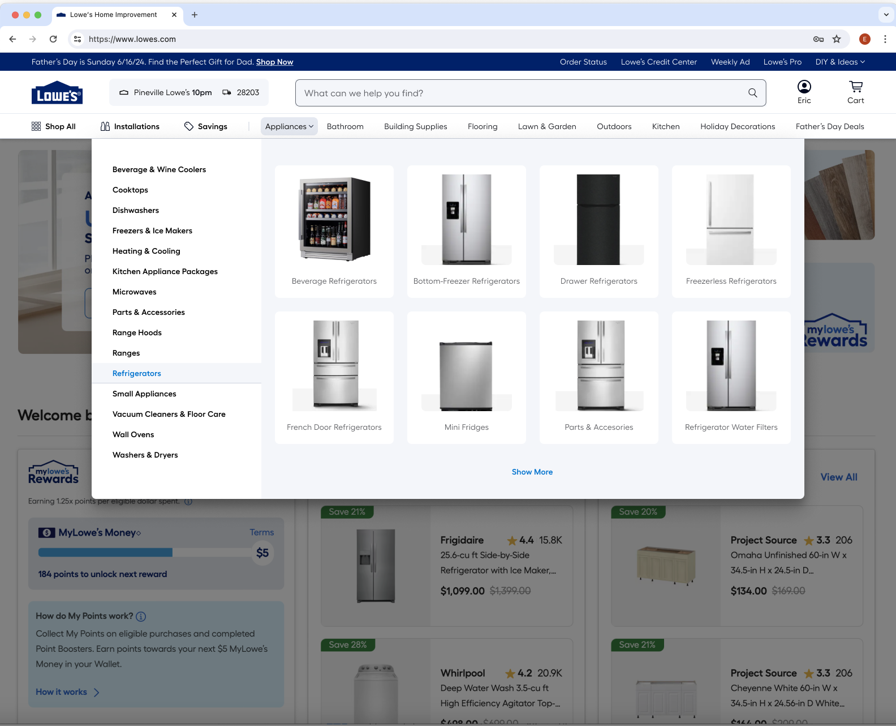
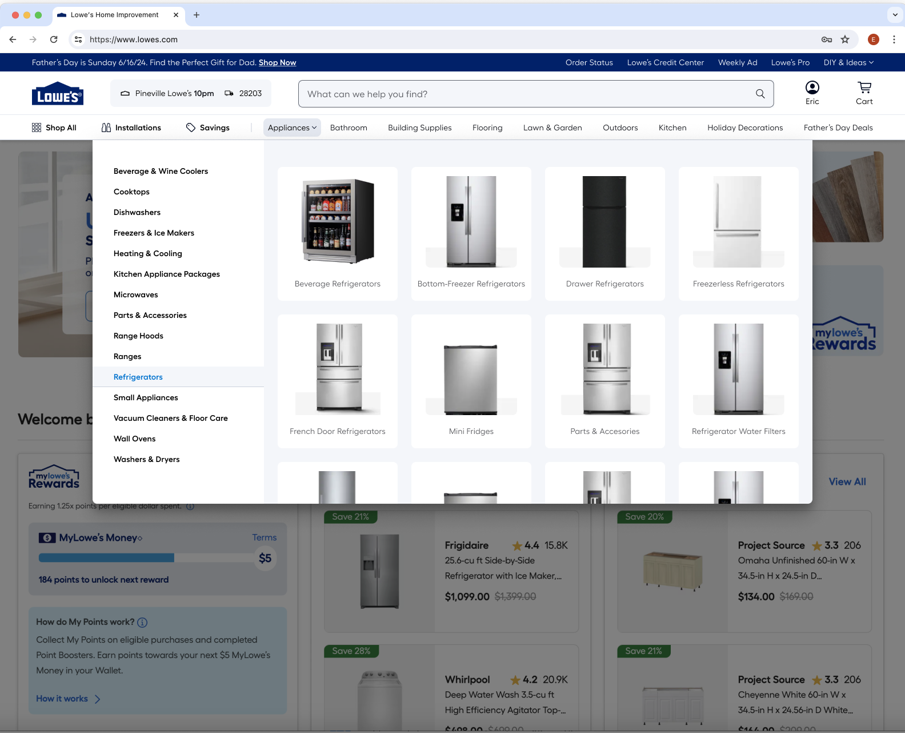

01 — Context
The most visited component on Lowes.com
The masthead exists on every page. It's the first thing every customer sees. For a retailer of Lowe's scale — hundreds of millions of sessions annually — even marginal improvements in navigation efficiency compound into significant revenue.
At the time this project launched, the masthead hadn't seen a structural redesign in years. It had accumulated debt: inconsistent hierarchy, poor mobile adaptation, navigation elements placed by legacy convention rather than data.


Before / after: desktop masthead state
02 — Problem
Rated worst-in-class by an independent audit
The 2024 Baymard UX audit called out Lowe's masthead and navigation as the worst part of the website — well below industry standards. This gave us executive mandate and a clear baseline to beat.
"The Baymard audit called out Lowe's Masthead and Navigation as the worst part of our website, and well below industry standards."
Specific issues the audit surfaced:
Customers couldn't find categories. The top-level navigation lacked the hierarchy cues customers needed to orient themselves. Click data confirmed users weren't reaching the Product List Pages that convert.
Wasted real estate around the logo. Heatmaps showed DIY & Ideas, My Lists, and Notifications — prominently placed — had low click rates. High-value actions like Account, Cart, and Search were sharing space with low-engagement links.
No quick-browse path. Getting from the homepage to a subcategory required multiple clicks. There was no shortcut for category-based shopping — the most common intent pattern for home improvement customers.

Evidence: navigation click distribution and Baymard benchmark scores


03 — Process
Data-led structure, interaction-led execution
The project started with a heatmap and click-analysis phase. We mapped every element in the existing masthead against engagement rates, then ranked them by traffic potential — not by historical convention.
From there, we ran a competitive benchmark: how do best-in-class retailers handle category navigation? What does quick-browse look like when it works? We documented patterns and pressure-tested them against our specific use cases (DIY intent, project-based browsing, search-forward behavior).
I ran three rounds of moderated user testing on interactive Figma prototypes — focusing on task completion rate for "find a category," time-to-PLP, and qualitative response to the new Quick Nav treatment. Each round tightened the design.
The decision to introduce Quick Nav was the single highest-leverage change. Nine category links — the top eight by sales volume, plus an event-based link — gave customers a direct shortcut to subcategory browsing without opening a full menu. On hover, they exposed Level 2 links, cutting decision latency significantly.
04 — Key decisions
Three choices that drove the result
Decision 01
Consolidate low-engagement links out of primary nav
Heatmap data showed My Lists and Notifications had low engagement despite prominent placement. We moved them into the Account section. DIY & Ideas went to Courtesy Navigation. This freed space for the nine Quick Nav category links — a higher-value use of the real estate.
Decision 02
Introduce Quick Nav category links under search
Quick Nav exposes the top 8 selling categories plus an event-based link as persistent tabs beneath the search bar. Hovering reveals Level 2 subcategory links — reducing the number of clicks needed to reach a category, and validated in testing to reduce decision fatigue. On narrower screens, categories are progressively dropped from the end of the list, ensuring the event link always shows.
Decision 03
Redesign the store/ZIP selector
The old store selector was oversized and visually heavy. We rebuilt it with a modernized, compact treatment that saves horizontal space, improves the hierarchy relationship to the search bar, and updates the brand feel — without changing the underlying functionality that customers rely on.
Decision 04 — Mobile
Mobile is not a resize — it's a reflow
Mobile Quick Nav introduces a horizontal scroll on the category links, so the full list is accessible without the viewport cost. Notifications moved into the account menu for a cleaner header. The fulfillment UI was collapsed to reduce masthead height on mobile — directly increasing the visible page area above the fold.
05 — Outcome
Every metric moved in the right direction
The redesigned masthead launched as an A/B test across a significant traffic sample. Results exceeded projections across every tracked metric.
$107.6M incremental revenue on desktop and $9.7M on mobile web — $117.3M total. The increase in % to PLP (+34 bps on desktop) drove a downstream cascade: more customers reached the PDP, more added to cart, more converted.
The 17% increase in total navigation interactions reflects the Quick Nav's impact — customers discovered a faster path to categories and used it. The 3.7% reduction in post-masthead searches confirms they were finding what they needed through navigation rather than falling back to search.
Post-launch analytics summary: navigation engagement and conversion funnel impact
06 — Next steps
From navigation to inspiration
The current Quick Nav shows Level 1 and Level 2 categories. The next phase introduces Grid View — a mega-menu treatment that can surface Level 3 categories, editorial content, and promotional moments. The goal is to transform the masthead from a wayfinding tool into an inspiration surface.
The foundation we built — the component architecture, the Quick Nav pattern, the mobile reflow system — is designed to scale to that vision without a redesign.


Grid View explorations — L3 categories + editorial moments